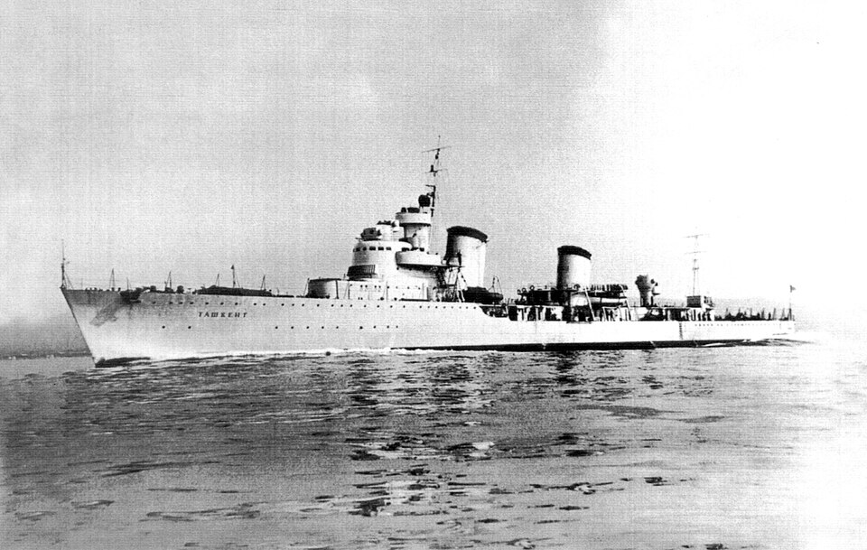

Tashkent
Destructor de Unión Soviética, perteneciente a la clase Tashkent · Proyecto 20. Construido en Italia para la Unión Soviética, fue un líder de destructores de gran velocidad.

Diseño y función
Tashkent pertenecía a la clase Tashkent · Proyecto 20. Líder de destructores, transporte rápido y apoyo costero. Sus prestaciones se detallan en la tabla técnica, con las fechas o condiciones disponibles en la referencia.
Operaciones y trayectoria
Construido en Italia para la Unión Soviética, fue un líder de destructores de gran velocidad. Realizó viajes de abastecimiento y evacuación hacia Sebastopol bajo intensa amenaza aérea.
Destino final y conservación
Hundido por un ataque aéreo en Novorossiysk el 2 de julio de 1942, después de sus últimas misiones a Sebastopol.